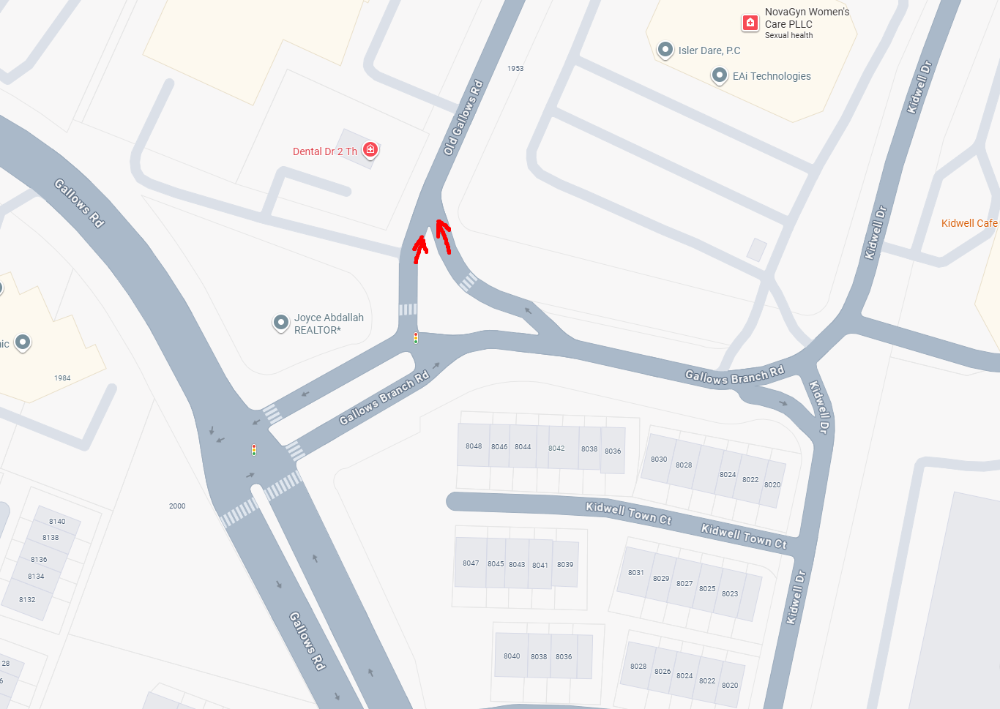
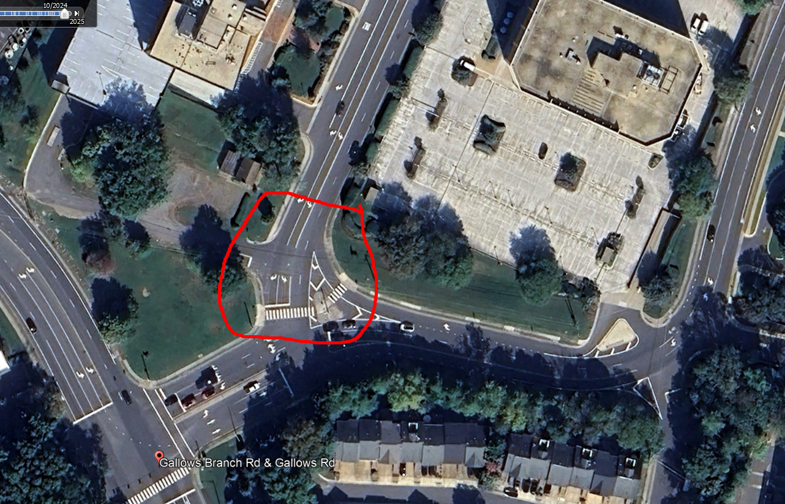

Intersection Design to Reduce Conflict and Improve Safety
A few months ago, a resident contacted our office requesting that we install a yield sign at the intersection of Gallows Branch Rd and Old Gallows Rd. The location is in the Tysons, VA area.
The map below shows the area. The road on the left-hand side is Gallows Rd. Gallows Branch Rd runs from west to east, connecting to Gallows Rd on the west and Kidwell Dr on the east. Old Gallows Rd is located between Gallows Rd and Kidwell Dr and connects to Gallows Branch Rd at the T-intersection.
The resident reported that some drivers using the channelized right turn from westbound Gallows Branch Rd to northbound Old Gallows Rd do not yield to vehicles on Old Gallows Rd. The two red arrows on the map below illustrate the traffic conflict between these two movements.
{kind=link}

Typically, when there is no receiving lane for a channelized right-turn lane, we install a yield sign and sometimes add yield markings for the turning traffic. If crashes have been reported, we may also install a No Merging Area sign below the yield sign. Based on the Google aerial photo, it appears the resident is correct that this location operates as a yield condition. One of our technicians visited the intersection and conducted a field review. He confirmed the existing conditions and prepared a sign sketch to install the yield signs.
{kind=link}

When I reviewed the sketch, I noticed there is only one left-turn lane from eastbound Gallows Branch Rd to northbound Old Gallows Rd, but there are two receiving lanes for this movement. In situations like this, most drivers tend to use the right-hand receiving lane because it is easier to complete the turn. But why do we need two receiving lanes?
To be continued...